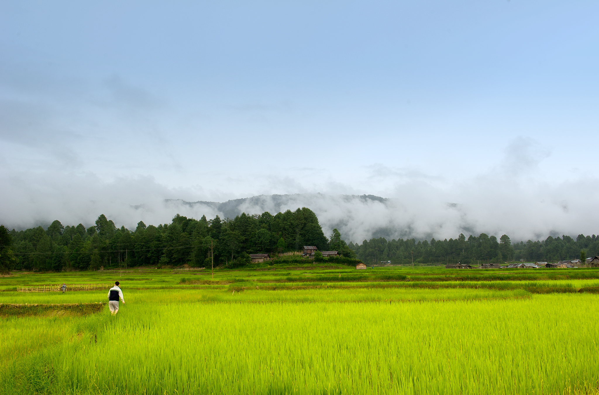

Ziro Valley, located in the Lower Subansiri district of Arunachal Pradesh, is a high-altitude plateau (1,500m) renowned for its stunning pine-clad hills, unique Apatani tribal culture, and the globally famous Ziro Festival of Music. Recognized on the UNESCO tentative list for World Heritage Sites, it is celebrated for its sustainable "paddy-cum-pisciculture" farming, where rice and fish are cultivated together in the same fields.